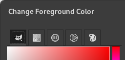
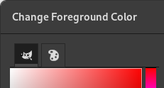

|

|
 |
| 3.22. Atalhos de teclado |

|
3.24. Unidades |
Com o comando de você pode exibir todos os módulos de extensão que estão disponíveis e controlar quais deles devem ser carregados. Os módulos executam funções como escolha de cores e filtros para a tela. Quaisquer mudanças que você faça no Gerenciador de módulos entrarão em efeito na próxima vez que você iniciar o GIMP. Essas mudanças afetarão a funcionalidade do GIMP, bem como seu tamanho em memória e tempo de inicialização.
A janela do Gerenciador de módulos exibe os módulos carregáveis.
Clicando nas caixas na primeira coluna vai marcar ou desmarcar os módulos. Da próxima vez que você iniciar o GIMP, todos os módulos marcados serão carregados.
Você notara a diferença apenas ao tentar usar os módulos. Por exemplo, há vários Seletores de cor para escolher a cor de frente ou de fundo. Alguns desses seletores são módulos, e só estarão disponíveis se você deixar marcada a opção respectiva no gerenciador de módulos.
Figura 16.16. Exemplo de módulos carregados: Módulos de seltores de cor.

Módulos seletores de cor carregados

Módulos seletores de cor desativados
Na parte de baixo do diálogo são exibidas informações de versão e direito de autor para os módulos que foram carregados na sessão atual do GIMP.
Na segunda coluna, para cada módulo carregado, o propósito do módulo é mostrado. Para cada módulo, mesmo os que não foram carregados, o caminho de pastas até o arquivo do módulo é exibido.
Quando você clicar no botão de , a lista de módulos será atualizada: módulos que não estão mais no disco serão removidos, e novos módulos aparecerão.